Ferret is an Agentic Development Environment (ADE) · Open source · Bring your own keys
The ADE for feedback by voice and screen.
Stop typing instructions. Point at the real screen, say what’s wrong, and hand your agent dozens of precise findings at once. Do it live in meetings, then let a decision model check every fix.
Works with Claude Code, Codex, Gemini CLI, Cursor, GitHub Copilot, Devin and 40+ CLI agents.
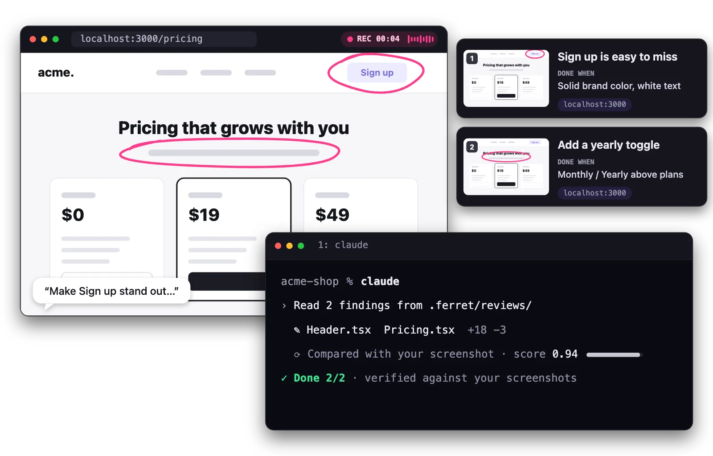
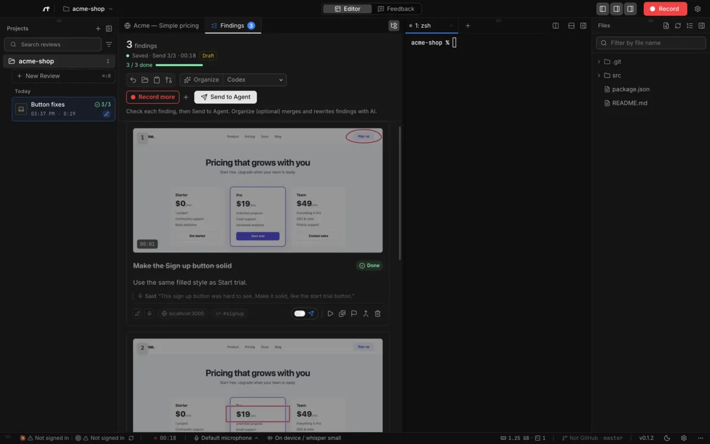
Text prompts vs. the screen
Don’t describe the screen. Point at it.
A typed prompt spends most of its words explaining where things are. On the real screen you just circle the spot and say what’s wrong. Every mark and sentence becomes a precise finding, with a still, your exact words, the URL and a “Done when”, so you can give dozens of them in one pass. On-device whisper transcribes it for free.
- Just your pen, a box and your voice
- Desktop and mobile widths
- Edit, merge or drop findings before sending
On the pricing page, the Sign up button in the top-right corner of the header is too pale and doesn’t look clickable. Make it a solid fill like the Start trial button in the middle plan card. Also add a Monthly / Yearly toggle centered just under the subtitle, above the three plan cards…
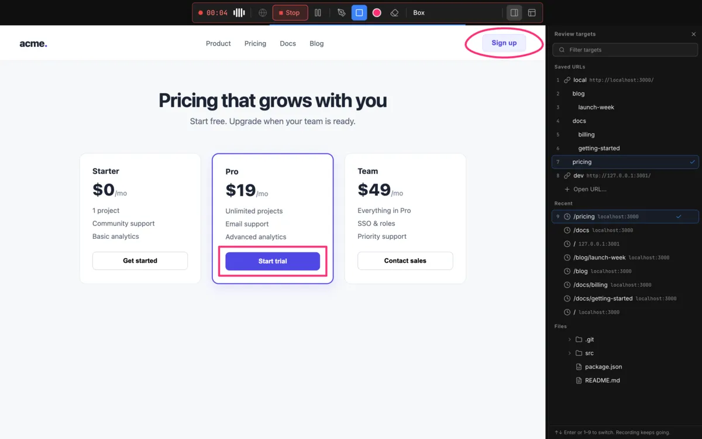
“Make this solid, like this one.” · “Add a yearly toggle here.”
Live in meetings
Run it in the meeting. Hand your agent everything that was said.
Online on Zoom, Meet or Teams, or around one screen in a room: everyone points and talks while you record the built-in browser, any window or the whole screen. Instead of a few lines of meeting notes, your agent gets every remark as text, tied to the exact spot on the screen.
“The CTA gets lost up there.”
“We need a yearly option.”
“On mobile the button is cut off.”
Findings
- 1Sign up is easy to miss
- 2Add a yearly toggle
- 3Button cut off on mobile
Send to agent
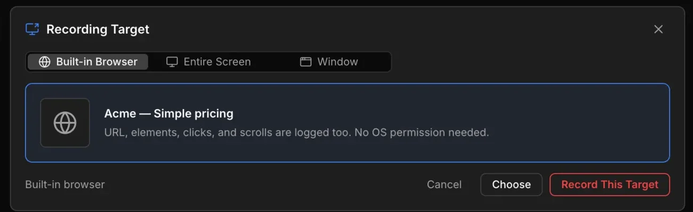
Checked by a decision model
Define what “done” means. A decision model checks it.
Every finding carries a “Done when”. After implementing it, your agent sends a fresh screenshot and that condition to the decision model you choose, and keeps going until every finding passes, with a score for each. That is how you know the agent did what you expected.
No more “I think it’s fixed.”
Decision modelsTypeSafe Jev · Cloudflare Clef / Clef Flash (Ollama or Workers AI) · Vercel AI Gateway · any compatible API
Ferret itself never judges: your agent calls your decision model with your own key, and you pay your provider directly. Ferret never charges.
- 1Sign up is easy to missDone 0.94
- 2Add a yearly toggleDone 0.91
- 3Button cut off on mobileNot done 0.42 · retryingDone 0.89
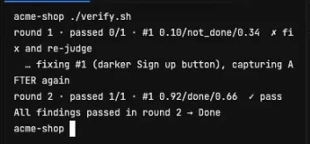
Features
Everything in Ferret, at a glance.
-
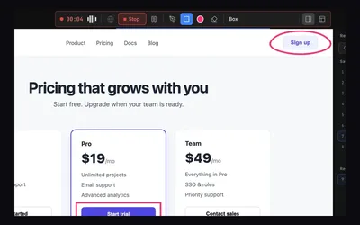
Pen, box and voice
Circle or box the spot in one of six colors, and just talk.
-

Your voice becomes text
Each finding keeps your exact words. On-device whisper is free.
-
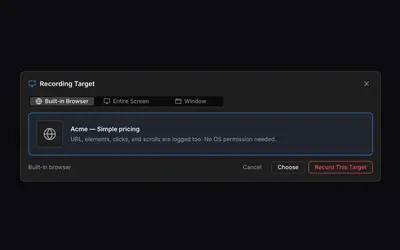
Record the meeting
Capture the whole screen or a window while you share it.
-
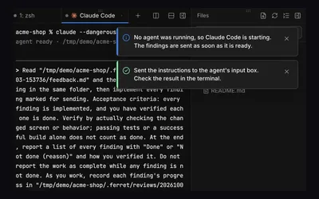
Send to Agent
Pick any enabled agent. Ferret starts it if it isn’t running.
-
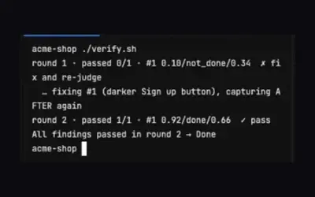
Checked by a decision model
Your agent checks each fix against “Done when”. Ferret never judges.
-
Needs you
“The yearly price isn’t in the plan data. Add it, or hide the toggle?”
from claude · finding 2
Your agent can ask you
When a premise looks wrong, the agent hands the question back to you.
-

Progress per finding
Not started, in progress, done, with a count in the sidebar.
-

Record more
Add another take to the review you have open.
-

Review targets
Saved URLs, recent pages and files, one key away.
-
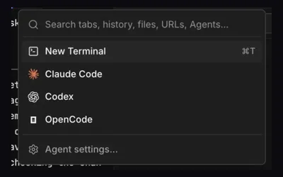
Split terminals, 47 agents
Launch any agent from one menu and drag tabs to split.
-

Everything in settings.json
One file holds every setting, so your agent can edit it.
-
- whisper.cppon device · free
- OpenAIyour key
- Groqyour key
- Workers AIyour key
Bring your own keys
You pay your provider directly. Ferret never charges.
How it works
Record. Review. Verify.
-
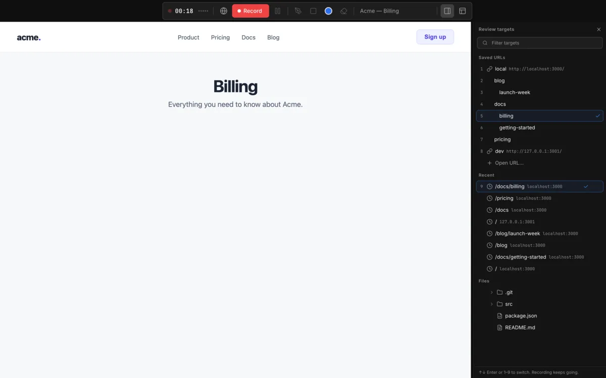
01Record
Use your app, circle and talk. In a meeting, everyone can chime in.
-
02
Findings
Stop recording. Each moment is a finding with a still, your words, the URL and “Done when”.
-
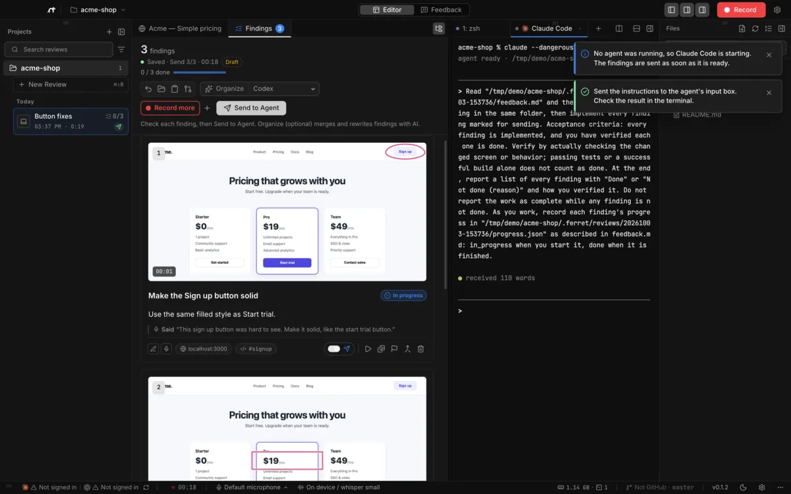
03Implement and verify
Send to your agent. It implements each finding and checks it against your screenshot until it passes.
Terminal output in this screenshot is a stand-in for the demo.
Works with your agents
Your agent, launched for you.
Ferret starts CLI agents in its built-in terminals and hands them the findings. They run on the subscriptions you already have.
- Claude Code (opens in a new tab)
- Codex (opens in a new tab)
- Gemini CLI (opens in a new tab)
- Cursor (opens in a new tab)
 GitHub Copilot (opens in a new tab)
GitHub Copilot (opens in a new tab)- Devin (opens in a new tab)
 OpenCode (opens in a new tab)
OpenCode (opens in a new tab)- Amp (opens in a new tab)
- Goose (opens in a new tab)
- Kiro (opens in a new tab)
- Droid (opens in a new tab)
- Cline (opens in a new tab)
- Grok (opens in a new tab)
- Antigravity (opens in a new tab)
- Qwen Code (opens in a new tab)
- Kimi (opens in a new tab)
- …and 31 more
Private by design · Open source
Your keys. Your machine. Your repo.
No Ferret account, no backend. Transcription and organizing run on your device or go to the provider you choose; the agent’s decision-model calls go to your key through a local relay. The code is MIT-licensed on GitHub.
- Keys stay in your OS keystore. Keychain, DPAPI or libsecret, stored apart from settings.
- Videos are never sent to agents. Findings and stills are saved in
.ferret/in your project. - Free and open source. MIT licensed. Read it, fork it, run it.
Your next review, by voice and screen.
Free to use, on your own keys.
macOS
- Apple silicon / Intel · .dmg
Tested on Apple silicon.
Windows Preview
- x64 / Arm64 · Installer (.exe)
Preview build. Tell us what breaks (opens in a new tab).